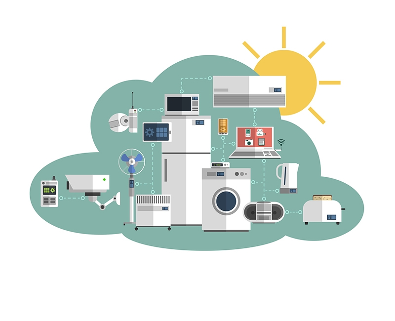

¿Cómo funciona el IoT?
El término IoT hace referencia a todos los sistemas de dispositivos físicos que reciben y transfieren datos a través de redes inalámbricas con intervención humana mínima, lo cual es posible gracias a la integración de dispositivos informáticos en todo tipo de objetos. Por ejemplo, un termostato inteligente (es decir, que utiliza el IoT) recibe datos de la ubicación de su automóvil inteligente mientras conduce para ajustar la temperatura de su casa antes de que llegue. Todo esto se logra sin su intervención e incluso ofrece un mejor resultado que si lo hiciera de forma manual. Un sistema de IoT tradicional, como el hogar inteligente descrito anteriormente, funciona enviando, recibiendo y analizando datos de forma permanente en un ciclo de retroalimentación. Según el tipo de tecnología de IoT, las personas o los sistemas de inteligencia artificial y aprendizaje automático (IA/ML) pueden analizar estos datos casi de inmediato o durante un cierto tiempo. Piense en el ejemplo del hogar inteligente. Para predecir el momento ideal en el cual controlar el termostato antes de que usted llegue a casa, el sistema de IoT puede conectarse a la API de Google Maps y, de este modo, obtener información actual sobre el tráfico en el área. Además, puede utilizar los datos a largo plazo que recopila el automóvil para conocer sus hábitos de conducción. Por otra parte, las empresas de servicios públicos tienen la posibilidad de analizar los datos de IoT de los clientes con termostatos inteligentes para optimizar el sistema a gran escala.
IoT empresarial
Por lo general, el IoT capta la atención de los consumidores, cuyas experiencias con tecnologías como los relojes inteligentes se ven afectadas por las preocupaciones en torno a la seguridad y la privacidad que supone el hecho de estar conectados de forma permanente. Esta perspectiva se aplica a todos los tipos de proyectos de IoT empresarial, especialmente cuando el usuario final es el público en general. Las soluciones de IoT para empresas les permiten mejorar los modelos comerciales actuales y entablar nuevas relaciones con los clientes y los partners. No obstante, su implementación presenta ciertos desafíos. El volumen de datos que genera un sistema de dispositivos inteligentes (lo cual se conoce como big data) puede volverse abrumador.Integrar el big data a los sistemas actuales y establecer análisis para poder utilizar esa información puede resultar complicado. Además, la seguridad es un aspecto muy importante a la hora de diseñar sistemas de IoT. Aun así, muchas empresas consideran que implementar esta tecnología vale la pena; por eso, es posible encontrar casos prácticos exitosos en casi todos los sectores.
Ejemplos de IoT empresarial
Iot Empresarial
Imagínese el ciclo de vida de la maquinaria pesada que se utiliza en las obras en construcción.Con el tiempo, es posible que los especialistas que manejan los equipos los sometan a distintos tipos de esfuerzos, así que es de esperarse que haya averías durante las operaciones. Para abordar este problema, se pueden agregar sensores especializados a las partes de la maquinaria que son más propensas a sufrir daños o a utilizarse excesivamente. Estos se pueden emplear para realizar un mantenimiento predictivo, para mejorar el desempeño del personal (lo que representa un buen ejemplo de la recopilación y el análisis inmediatos de los datos) y para brindar información a los ingenieros que diseñaron el equipo sobre cómo mejorar los modelos nuevos (lo cual es un ejemplo del análisis a largo plazo).El IoT industrial (IIoT) abarca este tipo de casos prácticos en las actividades de las fábricas, las empresas de energía y otros sectores.
IoT en la logística y el transporte
Una de las primeras implementaciones del IoT en el sector de la logística y el transporte consistió en etiquetar los contenedores de transporte con dispositivos de identificación por radiofrecuencia (RFID). Estas etiquetas almacenan datos que se pueden captar por medio de ondas de radio, lo cual permite que las empresas de logística realicen un seguimiento de los movimientos de los contenedores en ciertos puestos de control con RFID, como en el caso de los depósitos o las terminales de carga portuarias. Gracias a los avances en el IoT, se han desarrollado dispositivos de seguimiento con baterías que transfieren datos permanentemente a las aplicaciones de IoT sin la necesidad de tener lectores en las instalaciones, lo cual posibilita que las empresas analicen la información de los envíos de forma instantánea en cada tramo de la cadena de suministro.
IoT en la agricultura
El IoT ha revolucionado el sector agrícola de varias formas, como es el caso del uso de sensores de humedad. Cuando los instalan en los campos, los agricultores obtienen datos más precisos para programar los períodos de riego. Además, pueden conectarlos a las aplicaciones de IoT que controlan la maquinaria de riego, la cual se activa automáticamente en función de los datos que generan los sensores.